CreaturesWezens
Every grumpy creature you can cheer up, with its levels, element, where it lives and how to beat it. Bosses have their own pages.Elk chagrijnig wezen dat je kunt opvrolijken, met levels, element, waar het woont en hoe je het verslaat. Bazen hebben een eigen pagina. BossesBazen.
| NameNaam | Zone | Level | Element | WhereWaar | Tip |
|---|---|---|---|---|---|
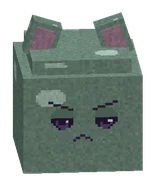 Klodder | De Knuffelzwammen | 1-4 | water | Klodderweide | |
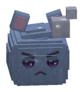 Bubbelklodder | De Knuffelzwammen | 2-5 | water | Klodderweide | |
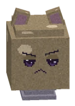 Stuiterklodder | De Knuffelzwammen | 3-6 | water | Klodderweide | |
 Moederklodder Moederklodder | De Knuffelzwammen | 5-6 | water | Klodderweide | |
 Hoedjesbol Hoedjesbol | De Knuffelzwammen | 6-10 | natuur | Sporenwoud, De Zwamgrot | |
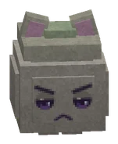 Sporenpuffer | De Knuffelzwammen | 7-11 | natuur | Sporenwoud, De Zwamgrot | Blijf uit de groene wolk: die geeft Gesporen (schade en minder heling). |
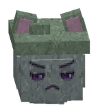 Mosgeest | De Knuffelzwammen | 8-13 | natuur | Sporenwoud | Een Mosgeest zwiept soms opzij. Blijf erbij, hij kan niet altijd ontwijken. |
 Zwamwachter Zwamwachter | De Knuffelzwammen | 9-13 | natuur | Sporenwoud, De Zwamgrot | Van voren blokt hij met zijn hoedschild. Loop om hem heen of sla hem net nadat hij zelf heeft uitgehaald! |
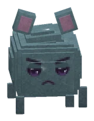 Druipslijm | De Knuffelzwammen | 12-16 | water | Druipgrotten | |
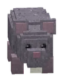 Grauwe Knaag | De Knuffelzwammen | 12-17 | Druipgrotten | ||
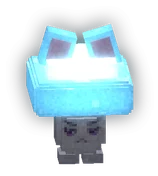 Glimzwam | De Knuffelzwammen | 13-18 | natuur | Druipgrotten | De Glimzwam heelt de wezens om hem heen. Vrolijk hem als eerste op! |
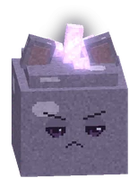 Kristalklodder | De Knuffelzwammen | 13-17 | water | Druipgrotten | Zijn kristallen weerkaatsen soms spreuken. Gewone klappen werken altijd. |
 Sporenpriester Sporenpriester | De Knuffelzwammen | 18-20 | natuur | De Zwamtempel | |
 Tempelzwam-ridder Tempelzwam-ridder | De Knuffelzwammen | 18-20 | natuur | Het Vadsrijk, De Zwamtempel | Zie je de rode strook? Dat is zijn zwaai. Stap opzij! |
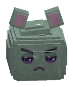 Kloddertje | De Knuffelzwammen | ||||
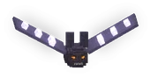 Galmvleermuis | De Splinterpieken | 20-23 | De Galmhellingen | Weg? Luister! Hoor je een hoog belletje, dan duikt hij zo achter je op. | |
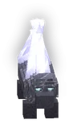 Kristalnaaldkruiper | De Splinterpieken | 20-23 | De Galmhellingen | Kristalnaalden in de sneeuw? Daar ligt er een op de loer. Trilt de grond: wegwezen! | |
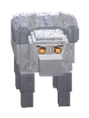 Sneeuwknabbelaar | De Splinterpieken | 20-23 | De Galmhellingen | Ze jagen in groepjes. Zie je er één laag zakken, dan springt hij: stap opzij. | |
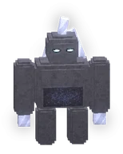 Splinterling | De Splinterpieken | 20-23 | De Galmhellingen | Elke klap op een Splinterling schiet scherven terug naar wie hem sloeg. Van ver weg slaan helpt niet! | |
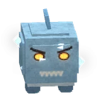 IJspuffer | De Splinterpieken | 23-26 | Het Bevroren Knuffelmeer | Blaast hij zich op? Dan komt er een vrieswolk. Even afstand houden. | |
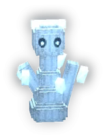 IJzelgeest | De Splinterpieken | 23-26 | Het Bevroren Knuffelmeer | Een ijsblauwe cirkel onder je = daar bevriest de grond. Stap eruit voor je Bevroren raakt. | |
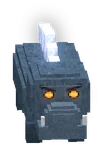 Schotsbijter | De Splinterpieken | 23-26 | Het Bevroren Knuffelmeer | Kraakt het ijs onder je? Rennen! Er bijt zo iets door de schots omhoog. | |
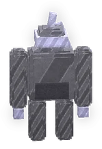 Versteende Wacht | De Splinterpieken | 23-26 | Het Bevroren Knuffelmeer | Traag maar loeizwaar. Uit de rode cirkel blijven, anders sta je even te duizelen. | |
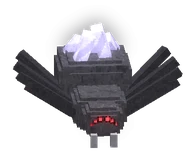 Grauwe Kristalspin | De Splinterpieken | 26-29 | De Splinterkloof | Haar web maakt je Plakkerig. Loop niet door de witte plakplekken. | |
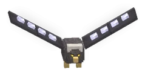 Kloofgier | De Splinterpieken | 26-29 | De Splinterkloof, De Spiegelburcht | Rode cirkel = hij duikt. Weg uit de cirkel, en sla hem als hij uitgeput op de grond zit. | |
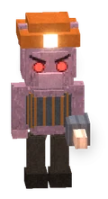 Mika-boorder | De Splinterpieken | 26-29 | De Splinterkloof | De rode streep is waar zijn boorkop heen vliegt. Stap uit de streep. | |
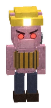 Mika-mijnwerker | De Splinterpieken | 26-29 | De Splinterkloof | Rent hij weg? Dan haalt hij vriendjes. Maak hem af voor hij terug is! | |
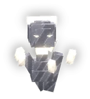 Scherfgeest | De Splinterpieken | 28-30 | De Spiegelburcht | Hij flitst om je heen en gooit dan scherven. Sla hem net na zijn flits. | |
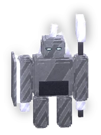 Spiegelwacht | De Splinterpieken | 28-30 | De Spiegelburcht | Zijn spiegelschild kaatst pijlen en spreuken terug. Val hem van opzij of van achteren aan! | |
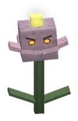 Bijtbloesem | De Schemerwortel | 30-34 | De Kruinzee | Niet elke bloem is lief. Ze loopt niet weg: van een afstand ben je veilig. Gele kegel = stuifmeel. | |
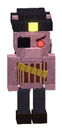 Bladrover | De Schemerwortel | 30-37 | De Kruinzee | Een rode streep naar jou = zijn enterhaak. Stap uit de streep, anders trekt hij je naar zich toe. | |
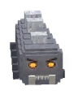 Grauwe Rups | De Schemerwortel | 30-37 | De Kruinzee | Rolt hij zich op? Opzij! Na het rollen is hij even duizelig: dan doe je extra schade. | |
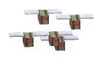 Grauwe Wespenzwerm | De Schemerwortel | 34-38 | De Takkenbanen | Eén zwerm, één levensbalk. Klappen die meer wezens tegelijk raken werken hier het best. | |
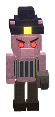 Kaasschutter | De Schemerwortel | 34-37 | De Takkenbanen | De rode streep is waar zijn kaaskogel heen gaat. Ren naar hem toe: van dichtbij slaat hij op de vlucht. | |
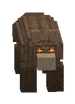 Schorsmarter | De Schemerwortel | 34-38 | De Takkenbanen | Ze komen per twee en springen van boven op je. Rode cirkel = daar landt hij. | |
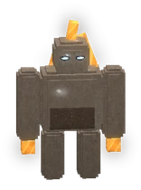 Harsgolem | De Schemerwortel | 40-46 | De Takkenbanen, De Kruinzee, Honingtak | Uit de rode cirkel blijven! Breekt er een roze kristal uit zijn rug, sla dan van achteren: x1,5. | |
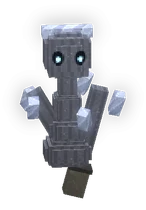 Lantaarnloze | De Schemerwortel | 40-43 | Honingtak, De Takkenbanen, De Kruinzee | Blaast hij het licht uit? Klik op hem om zijn lantaarn weer aan te steken: dan staat hij even stil. | |
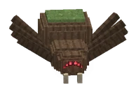 Schorskruiper | De Schemerwortel | 40-43 | Honingtak, De Takkenbanen, De Kruinzee | Die schors bewoog! Schorskruipers springen uit de wand als je te dichtbij komt. Pas op voor hun web. | |
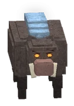 Rotzwijn | De Schemerwortel | 43-49 | De Wortelvelden | Schraapt hij met zijn poot? Dan stormt hij langs de rode streep. Stap opzij, en laat hem tegen een muur knallen. | |
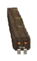 Wortelslang | De Schemerwortel | 43-46 | De Wortelvelden | Een stofspoor naar je toe = hij komt onder je omhoog. Raak hem als hij boven is! | |
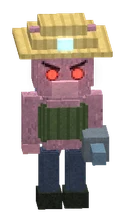 Mika-schimmelboer | De Schemerwortel | 44-49 | De Wortelvelden, Het Hart van de Boom, Het Wortelduister | Zijn schimmelvelden maken je Gesporen. Versla hem en zijn velden verdwijnen mee. | |
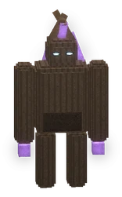 De Dove Ziener | De Schemerwortel | 47-50 | Het Wortelduister | Hij is blind maar hoort alles. Sluip (shift) naar hem toe: je eerste klap doet dan dubbel. | |
 Wortelschim Wortelschim | De Schemerwortel | 47-49 | Het Wortelduister, Het Hart van de Boom | In het donker sluipt hij achter je. Blijf in het licht, dan zie je hem en raak je hem goed. | |
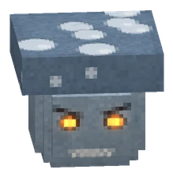 Schimmelbolletje | De Schemerwortel | Klein, maar het stuift. Pak eerst de schimmelboer! | |||
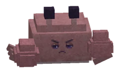 Grauwe Mopperkrab | De Lampionkust | 50-54 | De Koraalgrot, De Lampionkust | Houdt hij zijn scharen voor zijn gezicht? Dan doen klappen van voren maar de helft. Loop om hem heen! | |
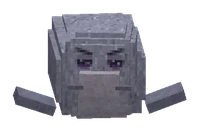 Pruilrob | De Lampionkust | 50-52 | Vliegereiland | Trommelt hij met zijn flippers? Dan glijdt hij op zijn buik langs de rode streep. Stap opzij! | |
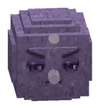 Stekelpluis | De Lampionkust | 50-54 | De Koraalbaai, De Lampionkust | Hij doet niks tot jij iets doet. Rode cirkel = zijn stekels: stap even weg. | |
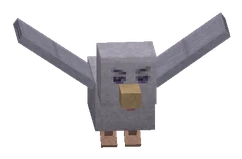 Mokmeeuw | De Lampionkust | 51-53 | Vliegereiland, Bloemeneiland | Rode streep = zijn duikvlucht. Opzij! Daarna zit hij even op de grond: dat is je kans. | |
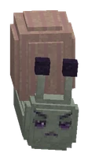 Zeurslak | De Lampionkust | 51-54 | De Koraalgrot, Bloemeneiland | Zijn slijmspoor maakt je Plakkerig. Kruipt hij in zijn huisje? Wacht even, dan komt hij weer naar buiten. | |
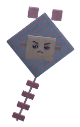 Bromvlieger | De Lampionkust | 52-55 | vuur | Vliegereiland, Het Wrak van de Vliegervanger | Paarse streep = een windstoot die je wegblaast. Komt hij laag, dan zwiept zijn staart. |
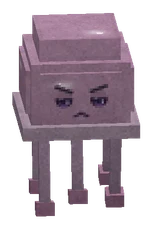 Grauwe Lampionkwal | De Lampionkust | 53-56 | De Koraalbaai, Het Mysterie-eiland | Rode cirkel onder de kwal = zijn tentakels prikken. Stap eruit en sla daarna terug. | |
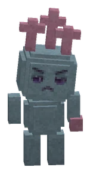 Koraalkobold | De Lampionkust | 53-54 | De Koraalbaai | Hij gooit koraalscherfjes van een afstand. Ren erheen: van dichtbij is hij een makkie. | |
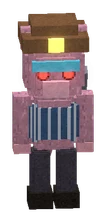 Vliegerknecht | De Lampionkust | 54-55 | vuur | Het Wrak van de Vliegervanger | Een Mika met een enterhaak. Rode streep = zijn haak: stap opzij, anders word je Plakkerig. |
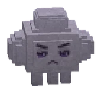 Mistmopje | De Lampionkust | 55-56 | Het Mysterie-eiland | Hij smelt weg in de mist en duikt achter je op. Zie je de rode cirkel? Weg ermee, anders wordt het even donker. | |
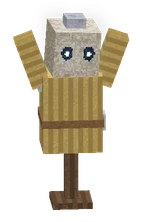 Bezeten Oefenpop | Hoogvads | 56-59 | De Proefarena | Die oefenpop bewoog! Grauw pluis is erin gekropen. Rode cirkel = hij draait rond: stap weg. Versla hem en het pluis waait eruit. | |
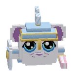 Sparringridder | Hoogvads | 56-56 | De Proefarena | De ridder slaat met een kussen langs de rode strook: stap eruit. Roze glinster aan zijn schild = hij blokt, wacht even. Drie kussenklappen en je verliest (het doet geen pijn). | |
| Grauwe Pluismijt | Hoogvads | 57-59 | De Marktlaan | Ze knabbelen aan de walvis. Klein en snel: klappen die meer mijten raken werken het best. | |
| Mika-saboteur | Hoogvads | 57-59 | De Marktlaan, Het Schuilnest | Rode cirkel = daar gooit hij een gassleutel. Blijf uit de grijze wolk, die maakt je plakkerig. | |
| Grauwe Wolkduivel | Hoogvads | 58-60 | De Wolkrand (zuid), De Wolkrand (noord), De Staartvlakte | Een rode streep onder je = hij duikt. Stap opzij! | |
| Mika-harpoenier | Hoogvads | 58-60 | De Wolkrand (zuid), De Wolkrand (noord) | Rode lijn = zijn harpoen. Raak je hem, dan trekt hij je naar zich toe. | |
| Mika-lontlegger | Hoogvads | 58-59 | De Marktlaan, Het Schuilnest | Hij blijft op afstand en gooit kaasbommen (rode cirkel). Ren naar hem toe: van dichtbij rent hij weg. | |
| Mistslier | Hoogvads | 58-62 | De Wolkrand (zuid), De Wolkrand (noord), De Staartvlakte | Grijze cirkel = mist. Wie erin blijft ziet bijna niks en wordt plakkerig. Loop eruit. | |
| Vermomde Mika | Hoogvads | 58-62 | Het Schuilnest | Niet elke Wolkwachter is echt! Een rode cirkel achter je = hij verschijnt daar. Stap weg. | |
| Duinkruiper | Het Zijdeland | 60-66 | De Roze Duinen, De Palmenkloven, De Zoutvlakte | Rode kegel voor hem = zijn staart prikt. Zijn gif is plakkerig. Loop om hem heen! | |
| Fennekguh | Het Zijdeland | 60-63 | De Roze Duinen | Hij hoort je van ver en roept zijn maatje. Rode streep = zijn sprong: stap opzij. | |
| Mika-Lampendover | Het Zijdeland | 60-70 | vuur | De Roze Duinen, Het Ruïnedal, De Moederoase | Rode kegel = zijn reuzendover. Hij maakt het donker en dooft je Vahoeg en Snelpootjes. |
| Springpiep | Het Zijdeland | 60-62 | De Roze Duinen | Rode cirkel = hij schopt zand: weg ermee, anders zie je even niks. Daarna stuitert hij weg en weer terug. | |
| Zandvlooi | Het Zijdeland | 60-62 | De Roze Duinen | Ze zitten verstopt in het zand (alleen twee voelsprietjes). Kom je dichtbij, dan springen ze eruit! | |
| Dadelaapje | Het Zijdeland | 62-65 | De Palmenkloven | Hij gooit dadels (rode cirkel) en pikt soms munten. Vrolijk hem op en je krijgt alles terug. | |
| Gierguh | Het Zijdeland | 62-64 | De Palmenkloven | Hij duikt op wie het LAAGST staat. Rode streep = duik. Daarna zit hij even op de grond: je kans! | |
| Spiegelslang | Het Zijdeland | 64-66 | De Zoutvlakte | Een luchtspiegeling: er zijn er drie, maar maar één is echt. Een kopie spat uit elkaar als je hem raakt. | |
 Zoutkreeft Zoutkreeft | Het Zijdeland | 64-67 | De Zoutvlakte | Zijn zoutkorst vangt klappen van voren. Van ACHTEREN is hij zacht: loop om hem heen! | |
| Zandgeestje | Het Zijdeland | 65-66 | De Zoutvlakte | Alleen 's nachts. Paarse cirkel = hij zuigt je naar zich toe. Stap eruit! | |
| De Zoutslang | Het Zijdeland | 66-66 | water | De Zoutvlakte | Ze zwemt door de rotsen en komt af op GELUID: rennen en slaan. Rode streep = daar komt ze uit! |
| Mika-Ringdrager | Het Zijdeland | 66-70 | vuur | Het Ruïnedal, De Moederoase | Paarse cirkel = hij opent een lichtvangpot. Loop uit de cirkel, dan breekt de straal. |
| Ruïnewachter | Het Zijdeland | 66-69 | Het Ruïnedal | Een stil standbeeld... tot je dichtbij komt. Grote rode cirkel = zijn stamp: neem afstand. | |
| Gedoofd sterretje | Het Zijdeland | 67-70 | De Moederoase, Het Ruïnedal | Drie rode cirkeltjes = sterrengruis. Vrolijk het op: soms wil het met je mee! |
Peaceful crittersVredige diertjes
| NameNaam | Zone | Level | Element | WhereWaar | Tip |
|---|---|---|---|---|---|
| IJsvogeltje | De Splinterpieken | ||||
| Kristalmot | De Splinterpieken | ||||
| Sneeuwhaas | De Splinterpieken | ||||
| Honingbij | De Schemerwortel | ||||
| Lantaarnkever | De Schemerwortel | ||||
| Sporenmot | De Schemerwortel | ||||
| Wortelmuis | De Schemerwortel |